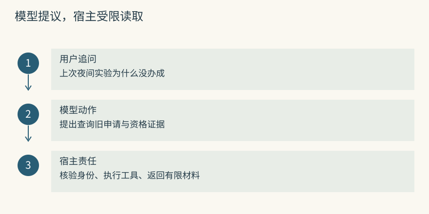
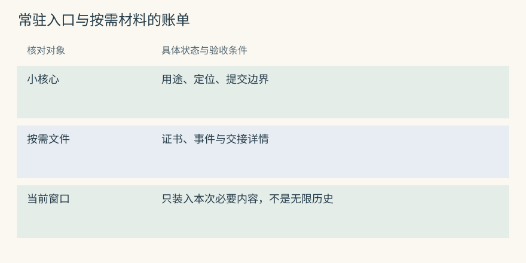
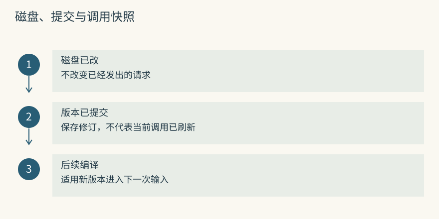
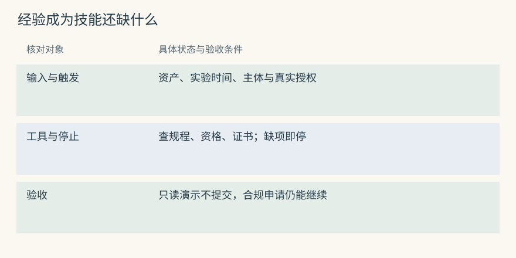
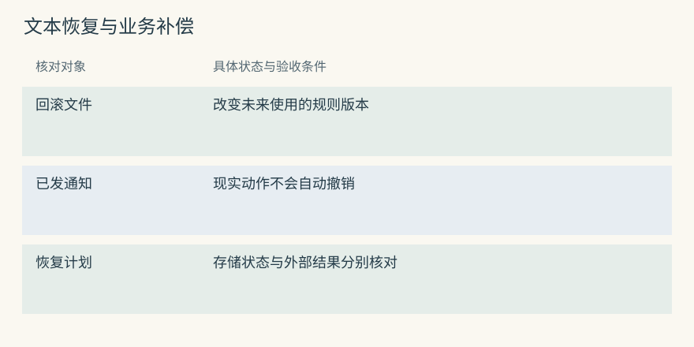
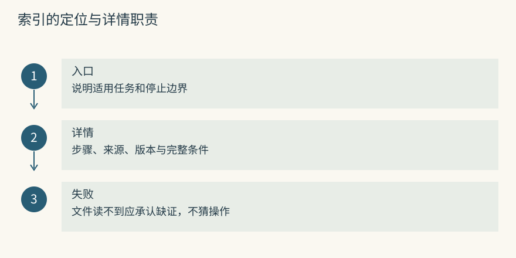
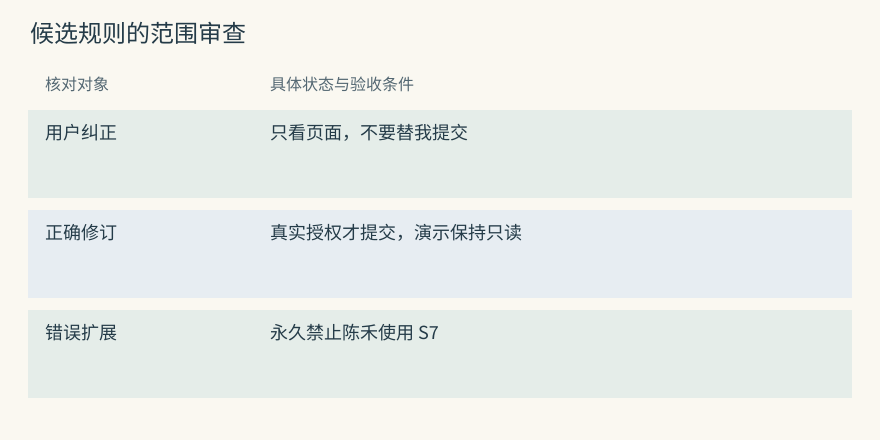
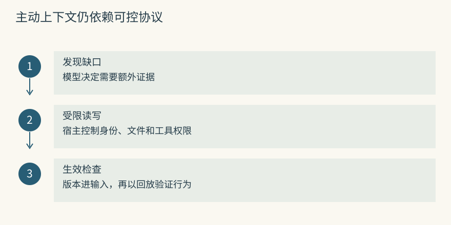

Agent 原生记忆与技能
如果应用没猜中要找哪段历史
陈禾问：“上次那个夜间实验为什么没办成？”当前消息没有仪器、申请号或日期，固定的预约搜索可能选错资料。另一种接法是让模型提出查询，通过工具读旧记录，发现缺口后再继续查。外部历史仍在存储里，只有工具返回的部分进入当前窗口。
MemGPT 的主动上下文管理可以从这种控制过程理解。模型先识别需要哪种证据，宿主校验并执行读取，模型据结果决定回答还是继续。它没有得到无限输入，更没有因调用记忆工具就更新基础模型参数。
当前问题：夜间实验为何取消？
第一次读取：找到相关申请，确认仪器 S7 与申请号。
第二次读取：展开退回事件，区分证书与培训资格问题。
回答：引用对应原因；若只找到猜测，则说明还需核实。新失败边界是模型没有发起读取。资料保存完好、搜索单测通过，也可能在端到端任务里完全不被使用。Mem0 或 Graphiti 可以被封装成工具，宿主仍负责认证、范围、次数和结果呈现，不能允许模型自行选择另一个学生身份。
源码与边界（选读）

工具参数宜表达“查哪类资料、关键词是什么”，可信范围由宿主附加。模型可以说“继续查光学实验室复核职责”，不能用任意 user_id 或 group ID 访问别人的资料。
Mem0：把 search 包成工具，主动选择发生在宿主
应用可暴露一个查询历史的工具，内部用可信身份调用 search()，再返回正文、来源和适用条件。Mem0 SDK 不会替宿主完成整个模型工具循环，也不能保证模型一定意识到需要搜索。
评测需要加入应查而没查、查错关键词、查到但未核验三类样例。只有单测 query 能返回 C8，还不能证明模糊提问会引导 Agent 找到 C8。工具限额也要覆盖多次补查，防止无限追索消耗预算。
Graphiti：图查询可以成为补证据工具
可以封装固定的 search() 或 search_() 配方，让工具返回 fact、端点、日期和来源。读到 S7 属于光学实验室后，模型可请求下一步职责信息，或由代码限深展开。
图中的路径不会自动触发模型动作。若第一步没调用工具，应先看宿主指令和控制流程；若调用了但只返回节点而非边，则检查配方和对象；若第二跳没查，再看证据充分性判断。不同失败不能都称为图没推理出来。
小核心常驻，大资料按需打开
每轮发送整学期申请记录代价很高。可以让核心只保留几项稳定入口：
共享仪器的预约规则见 instruments/MEMORY.md。
提交真实申请前读取对应资产规程；演示任务不得提交。
原始退回事件按申请号查询，摘要不足时展开来源。详细证书报告、退回日志和交接通知放在按需文件或历史库里。Letta Code 的 MemFS 为 Agent 提供这样的可编辑记忆文件视图，根内容参与核心提示，子目录用于延迟读取的详细材料。索引链接负责发现，不会自动展开全文。
核心太长会增加每轮费用，太短又可能让模型不知道有相关资料。好的入口同时说明内容、用途和路径，而不复制所有步骤。Mem0 可以由应用直接读稳定偏好，再按任务搜经历；Graphiti 可以提供对象概览和关系入口，但这些分层读取策略不是库自动等同于 MemFS 的协议。
源码与边界（选读）

常驻说明只写“预约材料”不够明确，写成“S7 正式预约：证书与资格检查，提交前阅读”更能表达触发条件。读到索引不代表读到流程，宿主要记录实际文件或对象展开。
Mem0：稳定摘要与详细事实可以由应用分层
已审核渠道偏好可按主体直接读取，仪器事件按 query 检索，原始来源再按 ID 展开。这是宿主的读取安排，Mem0 并没有自动编译 root、index、deferred 文件。
应避免同一要求既常驻又通过搜索重复交付。组装层可按记录或来源去重，但仍要保留条件不同的任务例外。稳定属性也要有版本和更新路径，不能因常驻就永久不刷新。
Graphiti：summary 可作入口，episode 可作详情
节点或社区摘要帮助了解某仪器的相关区域，事实边提供精确连接，episode 提供支持材料。三种粒度便于逐层读取，是否常驻由宿主决定。
发生职责交接时，摘要可能提到旧、新人名，读取当前事实仍应核对时间边。若只读概览就停止，图拥有详细来源也没有发挥作用。入口发现、事实选择和材料核验应分别记录。
写了文件，为什么这次还没有生效
Agent 已向模型发送旧规则，此时编辑了 S7 的项目笔记，正在计算的调用不会自动读取磁盘。新文件、新提交和新输入是三种状态，不能用一句“改好了”概括。当前任务需要立即使用纠正时，应通过当前消息或工具结果交付。
Letta Code 让 MemFS 通过 Git 保存修订。memory 工具的小修改会自动提交，直接编辑文件需要按协议提交，后续提示编译才把适用版本带入未来调用。这里的编译是将核心内容组织为模型输入，不是把 Markdown 编译成机器代码。
Mem0 update() 或 Graphiti 新 episode 处理完成也只改变后续读取状态。缓存、后端索引可见和宿主重新搜索之间仍有边界。若必须保证最新复核人，应等待处理完成、受限读回确认，再刷新输入，而不是期待模型自行发现数据库变化。
源码与边界（选读）

教学时间顺序是：调用 Q1 已发送周岚，后台改为顾宁，Q1 仍持有旧快照；下一次读取和编译得到新版本，Q2 才能使用顾宁。若 Q1 必须停止旧动作，需要宿主取消、重试或通过下一轮工具交互交付纠正。
Mem0：update 改存储，不改已发送的 prompt
更新重新生成 embedding 并修改 payload、历史等外部状态，不会回头替换已提交给回答服务的消息。后续搜索才有机会读到新正文，还可能被应用缓存阻挡。
对当前明确纠正，不宜只写库然后继续使用旧搜索结果。应用应直接把纠正放进当前交互，并决定是否让先前计划失效。存储成功、缓存刷新和模型重新读取需要独立确认。
Graphiti：新 episode 处理结束后仍有读取边界
材料处理可能改变关系区间和节点摘要，但原先打包的证据不会自己刷新。接收成功、处理结束、索引可见和新查询返回分别发生，应用应按需要等待并验证。
可在完成后用可信组范围查询目标事实，核对顾宁关系和旧关系结束日，再让下一次输入采用。仅收到 HTTP 接收响应不能支持“新规则已经影响所有助手”的承诺。
从一条教训到一个 Skill
“预约前核验证书”告诉助手注意什么，还没有说明怎样完成。一个可执行技能需要输入、工具、触发、停止和验收，并且区分只读检查与真实提交。以下是教学流程合同，不是生产仪器 API：
触发：用户明确申请 S7 的真实实验时段。
输入：资产 ID、实验起止时间、申请主体、已验证培训资格。
读取：当前规程、证书覆盖区间、可用时段。
停止：缺资格、证书不覆盖、用户只要求演示，均不提交。
执行：确认选定时段后，由授权服务提交一次申请。
验收：读取申请号和受理状态，区分待复核与已批准。路由摘要可以帮助先选择技能，再加载完整合同。Letta、TencentDB、MemOS 的技能组织共享渐进读取思路，但发布与生效协议各异。选中了摘要不能跳过全文，也不能扩大工具权限。
Mem0 的过程文本和 Graphiti 的步骤关系可作为编写技能的输入。Beacon 供实际轨迹，Basic 可存人审笔记，Hermes 可帮助在候选中选择。保存、筛选、审核、版本发布和执行是不同职责，不要让任一中间成功替代全部完成。
源码与边界（选读）

把步骤文字旁边列出还缺什么：参数 schema、可信来源、只读和写入工具、幂等提交、停止条件和业务验收。缺项没有补齐前，它只是过程候选。
Mem0：procedural_memory 生成的是步骤文本
_create_procedural_memory() 总结对话轨迹并保存可检索文字，没有自动打包脚本资源、审核参数、发布版本和授予权限。长步骤看起来完整，也可能没有说明返回 pending 时怎么办。
宿主应逐条回放输入和失败分支，确认不会重复提交或把演示当正式申请。实际资源和路由摘要还需指向同一审核版本，否则搜索到新步骤、加载旧脚本会形成混合执行。
Graphiti：可以表达步骤关系，不内置执行引擎
可以建立核验证书先于提交、受理后等待复核等关系。它们支持解释依赖，不能替代调度器、参数检查和当前业务系统调用。
宿主读取步骤证据后，仍应加载已审核完整版本，并确定用户意图与权限。图中存在“批准后可使用”不等于当前申请已经获得批准，更不能从静态关系自动推导执行完成。
回滚为什么不能代替测试
恢复旧文本能修正未来输入，不能撤销已经提交的预约、发出的通知或执行过的校准。一个版本即使可回滚，也可能在启用期间造成外部副作用。测试要在发布前检查触发边界、停止条件和权限，恢复要在出错后处理存储与业务两种状态。
可以用真实预约、纯演示、其他资产和无资格用户四组输入比较新旧版本。新规程应帮助合规申请继续，让不合格申请停在写入之前，不干扰无关任务。格式校验通过和 Git 提交成功都不提供这些行为证据。
Mem0 历史帮助找到旧正文，但恢复需再写入并检查缓存；Graphiti 删除一份新 episode 不保证恢复它触发的所有旧边和摘要变化。回滚范围应明确，必要时使用备份或按原事件重建，再处理外部业务补偿。
源码与边界（选读）

教学错误是把“查看空闲”误写成“自动提交”。恢复文本后，未来不会再自动提交，但已经生成的申请仍在业务系统。应查询其真实状态，并由有权流程决定取消，而非把文件回滚当作申请消失。
Mem0：history 提供修改证据，恢复需要再写入
应用可从历史挑出已知正确正文再调用 update，重新生成相关向量和存储状态。它不自动恢复外部技能文件、工具服务或宿主缓存，也不撤销过去动作。
恢复后用同一题组验证：真实申请仍可正常办理，演示不会提交，无权限不会绕过。还应检查实体链接和派生摘要是否继续传播错误要求，避免正文已修好而另一路入口仍旧。
Graphiti：删除新 episode 不等于整体回滚
remove_episode() 处理该来源相关对象，没有承诺反向恢复它导致的所有旧边失效和摘要变化。删除源材料也可能让某些事实失去支持，不能忽略剩余依赖。
完整恢复可依靠可验证备份、事件重放或派生视图重建。恢复之后分别检查端点、区间、摘要和来源。图可追溯使这类工作更有依据，但一个删除 API 不是整个 ingestion 的逆函数。
一个好索引，要让 Agent 知道何时值得打开
索引“仪器材料”只告诉模型这里有文件，没说明哪个任务该读。可以写成“S7 真实预约与夜间资格，提交前读取；教学演示单独见演示说明”。入口用少量文字表达用途和范围，详情承担完整步骤与来源。
不要把所有步骤同时复制到根索引和深层文件。两份正文更新不同步时，模型可能从旧摘要直接行动。入口可以保留稳定约束、用途、相对路径和版本发现信息；读取失败时应承认证据缺失，而不是把索引一句话视为已经读完流程。
主动发现会增加工具往返：先读索引，再读规程，必要时查事件。这节省每轮常驻成本，却引入选择和等待。任务高度固定时，宿主直接载入必要规程可能更可靠；任务跨度大时，按需发现才更有收益。应测实际未触发率与成本，而不是默认主动读取总是更好。
源码与边界（选读）

已知目标时可直接读稳定 ID 或 URI，未知时先搜索发现。路径与 ID 仍须经过当前权限检查；旧索引说明不授予今天的访问权，也不证明原流程版本仍适用。
Mem0：发现说明可以和读取正文分离
应用可维护短入口和审核正文，发现时返回入口 ID，工具再受限获取全文。get() 能避免已知目标仍依赖相似度偶然命中，但调用前应核验记录所属身份和可写读范围。
这样可以把发现失败与内容过期分开测试。若入口已知却 get 了旧版本，应查版本引用；若从未找到入口，应查索引描述与查询，而不是只调整全文正文。
Graphiti：规范节点 UUID 可以固定探索入口
确认 S7 身份后，可以用 center_node_uuid 支持距离相关排序，高级配置也可提供 BFS 起点。UUID 应来自可信资产映射，不能因模型给了一个字符串就跨组读取。
距离近只说明拓扑接近。仪器的参观位置边可能比复核职责更近，却不支持预约答案。还要结合关系用途、日期和来源，防止将近邻当作必需证据。
修改未来规则之前，先比较旧版和新版
陈禾说“上次只是让我看页面，别替我提交”。候选核心若写成“陈禾永远不能预约 S7”，就把意图纠正扩大成永久限制。更合适的规则是：只有用户明确授权真实申请时才提交，演示保持只读，并将本次错误留作来源。
将旧、新版带入相同题组，比较真实申请是否请求必要确认，演示是否保持只读，其他仪器是否不受影响。Frontmatter 和资源目录检查仅验证格式，Git 仅保存版本，行为边界要靠回放与审核。
还要防止模型把自己的猜测写成第二份证据。助手先猜“证书版本缓存导致退回”，下一轮反思又重复它，存成两份材料后并没有新增观察。未来规则应回到用户原话、可信通知或工具观测，并记录来源依赖。
源码与边界（选读）

同一猜测的回答、摘要和再次引用，应该沿依赖回到一个原点。不能用生成次数当支持次数。审核应明确候选是事实纠正、操作建议，还是经过验证的长期约束。
Mem0：模型自述不能当作第二份来源
自动提取可能吸收 Agent 对原因的自述。role、actor 或 attributed_to 有助区分说话者，却不提供验证。模型说了两次，仍可能只是同一错误推断。
高影响候选可要求工具或有权用户来源，再通过回放批准 update。变更日志应记录接受理由，避免上一轮未确认解释在下一轮自动变成确定规程。
Graphiti：多个 episode 可以重复同一未经验证的说法
模型回答和用户引用该回答可能成为不同 episode，边的来源数量增长，却没有独立观察。source_description 和外层事件映射可以帮助追溯依赖，防止转述被误读为多人确认。
节点 summary 合法地整合材料，也可能删去“怀疑”。更新未来规则前应展开真正支持链，检查是否有独立工具结果，不能只看图中有几份材料连到该边。
动手检查
S7 规程正文已经更新，但仪器索引没链接它；另一次修订已经写入文件，却没有按协议提交。请为两种情况分别列出应检查的状态。如果这次任务要立即使用纠正，还需要哪项交付？
答案提示：第一种查发现路径和实际打开行为，第二种查提交与后续编译。当前交互还需收到明确纠正或重新读取结果，不能只等未来核心刷新。历史 Letta 协议不应直接当作当前 Letta Code 文件规则。
实现笔记与源码对照（选读）
MemGPT：有限窗口如何主动换入历史
MemGPT 将工作窗口与外部资料分开，通过模型可调用的读写工具交换信息。当前窗口是本次能推理的材料，外部存储保留更多经历，需要时再调入。所谓虚拟上下文来自控制协议，不是物理容量消失，也不是在线训练。
核心记忆保存短而常用的主体信息；recall 面向历史对话；archival 面向可检索长期资料。模型发现缺少旧证据时查询，工具结果进入窗口，再决定继续或回答。窗口接近限制时，harness 的管理机制参与压缩和移出。
小核心、最近消息、当前问题组成一次输入
模型提出读取意图，宿主验证并执行工具
结果加入后续输入，模型核验缺口是否补齐
必要时继续读取，否则依据已得证据回答这种方案的代价是额外调用和触发错误。模型没意识到缺信息、关键词不对、读到半条链便停止，都需要端到端测量。复制一个向量库并不等同于复现论文的主动控制。
Letta 旧仓与当前 Letta Code
本地旧 letta-ai/letta README 指向当前 Letta Code 仓库，旧 V1 API server 保留在 archive 分支。旧仓适合理解历史与迁移，不能用它的更新频率评价当前运行环境，也不能把早期 API 教程无条件套到新协议。
当前 Letta Code 有 CLI、App Server 和 channels 等入口，文件记忆、Git 与提示编译需要按新仓核对。继承概念不代表文件格式和每个工具名都保持不变，接入应优先检查当前实现和实际输入。
Letta Code：MemFS 文件如何变成上下文
提示目录 的 letta_root_memfs.md 区分 harness 自动存储的 message history 与 Agent 可编辑文件。历史供 recall 搜索，长期笔记供整理和修订。为了改进规则而改写原始经历，会破坏后续核验。
Core、索引与 deferred memory
根 Markdown 参与核心输入。根 MEMORY.md 用作不带 frontmatter 的概览与索引，其他根 Markdown 要按当前协议提供恰好 name、description 两个字段。子目录带自己的 MEMORY.md，承载按需读的详情；skills 有独立结构。
MemFS/
MEMORY.md 核心入口与用途说明
communication.md 已确认的沟通默认
instruments/MEMORY.md 按资产发现规程
instruments/s7-booking.md S7 预约条件和来源
skills/ 审核后的过程资源发现路径使用普通相对 Markdown 链接，不要把旧 [[path]] 约定写成现行要求。链接的存在不展开全文，模型需先读目录索引，再读具体材料。长日志放详情或 recall，根文件保持小而可用。
写了文件，什么时候生效
MemFS 是 Git-backed projection。memory 工具的小修改可自动提交，直接文件编辑需要提交到对应记忆仓库。Pre-commit 校验 frontmatter 并保护只读文件，但不会证明预约流程正确。
候选修订 → 文件保存 → 校验并提交 → 后续提示编译 → 新调用读到
当前调用若需立即纠正：另外通过消息或工具结果交付新 conversation、显式 recompile 或相关已提交修订触发的后续编译才反映内容。排障要看实际采用的 revision、索引是否可发现、材料放在哪层，不能只看磁盘最后修改时间。
system prompt learning 如何起作用
把已核验的演示约束写入核心或明确入口，未来输入就会包含它，从而可能改变动作选择。这属于输入文本空间的学习，没有训练基础模型。效果可以回放观察，也可能因为过度概括而损害其他任务。
例如把“演示不提交”写成“永远不提交”，会让助手失去办理真实申请的能力。保留来源、资产、触发、停止和验证，并在宿主层维持权限检查，才能限制一次误解的传播范围。
如何读取一次旧经历
问某次夜间实验取消原因，核心可能只有仪器入口。Agent 读 S7 笔记定位申请，再用 recall 找原对话或工具返回。若只得到缓存假设，应继续核验或明确证据不足，而不是从概览补造原因。
/doctor 等检查可帮助发现过大核心，不能替代行为测试。共享 memory repo 也有自己的读写来源和权限，Git 历史可能同步远端，禁止把凭据写入其中。用户删除需要检查文件、历史和备份政策，而不只是删当前段落。
记忆与 Skill 的区别
记忆保留所知与经历，技能给出一类任务的操作合同。成功一次的按钮点击顺序，只能成为候选轨迹；要复用需要参数、工具、允许状态、失败停止和验收。尤其不能把“受理成功”写成“审批完成”。
可以聚合同类轨迹，提取稳定条件，生成技能草稿，回放普通申请与反例，再审核发布。Letta 用独立技能文件，TencentDB 管理资产、版本和路由，MemOS 插件组织过程候选。路由摘要用于选中，执行前仍需完整版本和当前授权。
Coding Agent 特有的记忆
仪器预约程序的编码助手更需要仓库约束、接口边界、失败测试和交接记录，而不只是学生偏好。某次重复提交 bug 的根因、申请状态机的限定和回滚步骤，都可能影响下一次修改。
Beacon 可提供动作证据，Hippo 维护经验价值，Basic 方便人审笔记，TencentDB 将代码和文档纳入资产，Letta 维护未来核心。组合时应只有明确的最终组装职责，避免多个 hook 用不同摘要把“不要重复提交”反复覆盖成不一致的规则。
同样的渐进加载，各项目如何实现
Letta 在编译时提供 core/index，再由 Agent 打开 deferred 或 recall；TencentDB Proxy 提供高层入口，低层和知识通过工具读取；Basic 已知 URI 时可直接读，关系深度受控。它们都可能因入口遗漏而错过正确内容，生效语义却不同。
Letta 改核心影响未来提示，Basic 同步改变可搜索视图，TencentDB 撤销 Loadout 改变可见资产。Cognee Skill route、MemOS reader/插件、Hippo 经验或技能模块可以帮助宿主取得过程知识，不因此共享 self-edit/commit/recompile 协议。Hermes 的 skillpick 负责候选选择，不负责发布、长期存储或执行授权。
Skill 版本化为什么不等于评审
TencentDB 的 技能版本实现 检查 owner、version、hash，复制或变更资源，再追加数据库版本并在失败时清理。资源存储与元数据间没有一个全局 SQL 事务，顺序、补偿和自愈都可能影响可见状态。
发布后路由摘要、执行全文、脚本资源和缓存应指向同一审核版本。旧缓存继续加载旧步骤时，版本表中存在新号也无济于事。应测试部分失败和撤销，再测技能行为。
Letta 的 Git 便于 diff 和恢复，MemOS 的结晶化说明知识经过提炼，Basic 笔记与 Hippo 经验也能作为技能素材。它们都没有仅凭版本操作证明过程安全。工具策略、人工批准和反例回放应独立保留，Beacon 的完整轨迹同样不是审批凭证。

项目对照速查（选读）
本章对照结论
| 实现 | 小入口到详情的方式 | 更新生效与边界 |
|---|---|---|
| MemGPT / 历史 Letta | 核心加 recall/archival 工具 | 读取补窗口，历史协议不等于新文件格式 |
| Letta Code | 根内容、索引、详情、历史和技能 | 已提交修订经后续编译影响输入 |
| TencentDB | 可见资产、高层摘要与低层工具 | 核对 owner、版本、缓存和资源补偿 |
| MemOS | 经验、策略、技能和 reader | 模块处理与宿主加载，不同于 KV/LoRA 分层 |
| Cognee | 类型化过程与相应 recall 路线 | 得到步骤不代表得到执行权限 |
| Hippo | 本地经验和可选过程入口 | 寿命反馈不等于技能批准 |
| Basic Memory | URI 与关系笔记展开 | 文件同步与读取，不执行链接授权 |
| Hermes Jev Skills | 选择候选、判断充分性 | 只改变本次选择，不负责发布 |
| Agent Beacon | 动作轨迹供提炼 | 捕获之后仍需审核与版本化 |
| 其他事实或图框架 | 保存约束，由宿主读取和封装 | 不能据此认定原生自编辑运行环境 |